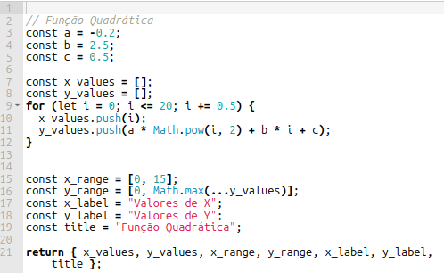

1. "multiparadigma": suporta programação orientada a objetos (baseada em protótipo), programação imperativa, e programação declarativa;
2. programação "imperativa": descreve o fluxo de controle passo a passo (ou "como");
3. programação "declarativa": descreve o que se deseja que o programa execute (ou "o que");
4. "protótipos": utiliza protótipos para a herança de objetos;
5. "interpretada": executado diretamente pelo interpretador (browser moderno), sem necessidade de um compilador.3 A linguagem
3.1 JavaScript
Javacript (JS) é uma linguagem para web. Ela completa a tríade essencial, HTML-CSS-JS. Enquanto HTML preocupa-se com o conteúdo e CSS com o estilo, JavaScript ocupa-se do comportamento, ou seja, a interatividade do usuário frente à uma página web.
Um pouco mais formalmente, JavaScript consiste numa linguagem de programação multiparadigma interpretada para protótipos, e baseada em objetos imperativos e declarativos. Tá bom, isso não é muito lá explicativo. Tentando uma tradução livre, então:
Dentre as características acima, a última, linguagem “interpretada”, difere de outras linguagens de programação de forma singular: o fato de ser uma linguagem que não precisa de um compilador externo possibilita que o código criado seja lido em qualquer navegador, já que esses possuem há bastante tempo um interpretador, ou máquina JS.
JavaScript teve seu nascimento das mãos do programador norte-americano Brendan Eich em 1995, na Netscape Communications, embora tenha sido formalizada como linguagem padronizada em 1997 1. Originalmente foi concebida para acrescentar interatividade a páginas web. Inicialmente denominada Mocha e depois LiveScript, foi renomeada para JavaScript mais por uma coincidência histórica e estratégia de marketing do que por semelhanças técnicas, para se associar à popularidade do Java 2.
Caso deseje aprofundar-se em JavaScript, sugere-se os links abaixo:
Assim como outras linguagens de programação, a linguagem JS possui bibliotecas, módulos independentes de códigos para cumprir certas funções em distintos cenários. Nesse sentido, JS cumpre metade do nome do JSPlotly. A outra metade vem da principal biblioteca que é utilizada por esse para a construção de gráficos, mapas, e alguns outros objetos interativos, Plotly.js. Sendo assim, nada mais oportuno do que aprender um pouco de JS para compreender como o JSPlotly trabalha com seus códigos junto à biblioteca
Plotly.js.3.2 Estrutura de JS
Uma linguagem de programação normalmente possui características estruturais comuns. Isso quer dizer que há comandos para declarar uma variável e seu tipo, a entrada e saída de dados (resultados), a criação e uso de funções, e cálculos aritméticos, por exemplo.
Assim, e mesmo que haja um GSPlotly à mão para a construção de códigos (ou outro assistente de IA), é importante aprender um pouco da estrutura e da sintaxe (comandos) de JS. Como visto no capítulo anterior, esse aprendizado inicial lhe permitirá consideráveis vantagens para além do “vôo às cegas” que se conduz apenas no jogo de cópia/cola dos códigos gerados pela IA. Entre essas vantagens 1) uma melhoria contínua na capacidade de modificar o código sem precisar da IA, 2) um aprendizado inestimável nos dias de hoje para uma linguagem de programação “de ponta” para finalidades variadas.
Tal como outras linguagens de programação, JavaScript opera com uma logística similar de declarações (palavras-chave, operadores, valores, expressões). Assim:
## Declarações em JavaScript ##
1. Palavras-chave: sintaxe da linguagem JS;
2. Operadores: caracteres que realizam operações;
3. Valores: texto, números, verdadeiro/false (variável "booleana"), "não definido", "nulo";
4. Expressões: trecho de código que produz um único valor. Do ponto de vista estrutural, por conseguinte, JS possui características que também são comuns a outras linguagens de programação, tais como:
1. Saída de dados;
2. Declaração de variáveis;
3. Tipos de dados;
4. Constantes;
5. Aritmética;
6. Vetores;
7. Funções;
8. Geração de dados aleatórios;
9. Objetos;
10. Operadores;
11. Estruturas de controle;3.3 Aprendendo um pouco de JS com…a parábola !
Já que utilizamos a parábola do código padrão do JSPlolty como modelo desde o início, por que não começar o aprendizado de JS e Plotly.js com essa ? Vejamos o que há no código da Figura 3.1 abaixo.

Lógica de programação
Vamos analisar o código da parábola por 3 “jeitos” crescentes.
1a. Visão do código
O código modela uma parábola (y = ax²+bx+c) com coeficientes fixados no início. Inicialmente produz uma lista x e outra y, define os limites que vão aparecer no gráfico, coloca alguns nomes e depois desenha o gráfico.
Essa é descrição do algoritmo em linguagem natural, uma primeira aproximação entre a ideia que se deseja e sua formalização.
2a. Visão do código
Pesando na estrutura da linguagem de programação, o código funciona mais ou menos assim:
- Define-se primeiro os parâmetros da parábola como constantes (declaração de variáveis);
- Cria-se duas listas vazias onde será introduzidos os dados (vetores - x e y);
- Cria-se os valores para x com um laço repetitivo for (estrutura de controle);
- Calcula-se os valores de y com base na equação (cálculos);
- Define-se os limites de valores de x e y para o gráfico;
- Coloca-se rótulos no gráfico, como título e os nomes dos eixos;
- Entrega-se o gráfico com os ítens acima.
Essa forma de observar como o objeto é criado numa linguagem de programação está inserida num conceito denominado pensamento computacional (PC). Veja que a lógica desse PC envolve dividir o problema em partes e solucionar cada parte individualmente no algoritmo (dividir para conquistar!).
3a. Visão do código
Uma outra forma de se abordar o código se dá pelo que se denomina lógica de programação ou pseudocódigo (pseudo linguagem). Ao invés de se textualizar o que o código faz, como acima, ou de se oferecer toda a sintaxe de seus comandos, busca-se descrevê-lo combinando-se um pouco de ambos, linguagem natural e estrutura de programação. Para o exemplo da parábola, a pseudolinguagem poderia ser:
INÍCIO
// 1) Definir parâmetros da função quadrática y = a·x² + b·x + c
a ← -0,2
b ← 2,5
c ← 0,5
// 2) Preparar vetores de dados
x_values ← lista vazia
y_values ← lista vazia
// 3) Varredura do domínio: gerar pontos de x de 0 até 20, passo 0,5
PARA x DE 0 ATÉ 20 PASSO 0,5 FAÇA
// 3.1) Registrar o x
anexar x EM x_values
// 3.2) Calcular y(x) = a·x² + b·x + c
y ← a * (x^2) + b * x + c
// 3.3) Registrar o y
anexar y EM y_values
FIM-PARA
// 4) Definir faixas de eixos (range) e rótulos
x_range ← [0, 15] // mostrar no gráfico apenas x entre 0 e 15
y_range ← [0, MÁXIMO(y_values)] // mínimo fixo em 0; máximo conforme dados
x_label ← "Valores de X"
y_label ← "Valores de Y"
title ← "Função Quadrática"
// 5) Entregar o "pacote de saída" para o mecanismo gráfico
RETORNAR {
x_values, y_values,
x_range, y_range,
x_label, y_label,
title
}
FIM
Perceba então a “escadinha” de linguagem que se forma entre a ideia original e o algoritmo final:
Natural → Pseudocódigo → Código real
Eich, Brendan, and C. Rand McKinney. “JavaScript language specification.” Techn. Ber. Netscape Communications, Nov (1996): 96-002.↩︎
A linguagem foi padronizada como ECMAScript (ES1) em 1997 pela Ecma International, para garantir sua interoperabilidade entre navegadores. Atualmente JavaScript conta com atualizações anuais e que possibilitaram funções arrow, classes, módulos e promises para desenvolvimento web, tanto em front-end quanto no back-end com Node.js, para aplicações web, criação de servidores e automação.↩︎